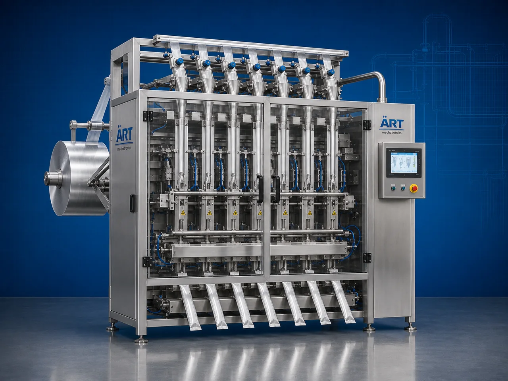

Multi Lane Packing Machine (Automatic Multi Lane Sachet Packaging System)
A Multi Lane Packing Machine, also known as a Multi Lane Sachet Packing Machine, Multi Channel Packaging Machine, or Multi Lane Form Fill Seal Machine, is an advanced industrial packaging solution designed for simultaneous multi-lane pouch forming, filling, sealing, cutting, and high-speed sachet packaging operations for ultra high-volume production environments.

About the Multi Lane
Multi lane packing systems are widely used for:
- Ultra high-speed sachet packaging
- Multi-lane filling operations
- Pharmaceutical sachet packaging
- FMCG packaging lines
- Powder, liquid, and paste packaging
- Continuous industrial production
The machine improves:
- Production output capacity
- Packaging speed
- Filling accuracy
- Production efficiency
- Packaging consistency
- Labor reduction
Industrial multi lane packing machines use:
- Multiple synchronized packaging lanes
- Servo motion control systems
- PLC and HMI automation systems
- Precision dosing and filling technology
- High-speed sealing and cutting mechanisms
to produce multiple sachets simultaneously with highly synchronized and efficient packaging operations.
Multi lane packing machines are widely used in industries such as:
Pharmaceutical industries
Food processing industries
FMCG industries
Cosmetic industries
Beverage industries
Nutraceutical industries
Spice industries
Chemical industries
where mass production sachet packaging and ultra high-speed automation are essential.
The machine is highly suitable for:
- Pharma sachet packaging
- Shampoo sachet packing
- Coffee sachet packaging
- Spice powder packaging
- Beverage premix packaging
- Nutraceutical powder packaging
ART Mechatronics offers high-performance multi lane packing machines, engineered for ultra high-speed industrial operation, synchronized multi-lane packaging, accurate filling performance, and reliable long-term automation.
Working Principle of Multi Lane Packing Machine
Laminated film roll feeds into multiple packaging lanes simultaneously
Machine forms multiple sachets side-by-side using synchronized forming systems
Each lane independently performs pouch forming, filling, sealing, and cutting operations simultaneously.
Machine handles:
- Powders
- Granules
- Liquids
- Paste products
- Beverage premixes
- Pharma powders
- Cosmetic products accurately and continuously.
Multi-lane sealing systems perform: 3 side seal 4 side seal Center seal Stick pack sealing with ultra high-speed synchronized motion.
System controls: Lane synchronization Filling accuracy Packaging speed Film tracking Sealing temperature
Finished sachets discharged automatically for: Collection Cartoning Secondary packaging Dispatch operations
Types of Multi Lane Packing Machines
- 1. Powder Multi Lane Packing Machine
Designed for: ✔ Powder sachet packaging applications
- 2. Liquid Multi Lane Packaging Machine
Suitable for: ✔ Liquid and paste sachet packaging systems
- 3. Stick Pack Multi Lane Machine
Uses: ✔ Stick sachet packaging applications
- 4. Servo Driven Multi Lane Packing Machine
Designed for: ✔ Ultra high-speed precision packaging systems
- 5. Food Grade Multi Lane Packaging Machine
Suitable for: ✔ Hygienic food and pharmaceutical packaging systems
- 6. Fully Automatic Multi Lane Packaging System
Designed for: ✔ Complete industrial sachet automation lines
Industries Using Multi Lane Packing Machines
💊 Pharmaceutical Industry Medicine powder, oral supplement, and healthcare sachet packaging systems 🌶️ Spice Industry Turmeric, chilli powder, coriander, cumin, and seasoning sachet packaging systems 🍃 Food Processing Industry Coffee, tea, sugar, milk powder, namkeen seasoning, and ingredient sachet packaging systems 🛒 FMCG Industry Consumer sachet product packaging systems 🧴 Cosmetic Industry Shampoo, cream, lotion, face wash, and cosmetic sachet packaging systems ⚗️ Chemical Industry Powder and liquid chemical sachet packaging systems 🥤 Beverage Industry Instant beverage premix and flavored drink sachet packaging systems 🌿 Nutraceutical Industry Protein powder and health supplement sachet packaging systems
Features & Advantages
- Ultra high-speed multi-lane packaging operation
- Simultaneous multiple sachet production capability
- Accurate filling and synchronized sealing performance
- Massive production output efficiency
- PLC and servo automation control systems
- Supports powder, liquid, granule, and paste packaging
- Reduces labor and operational costs
- Hygienic food-grade construction available
- Reliable long-term industrial performance
Technical Highlights
Machine Type: Powder multi lane packaging machine Liquid sachet packaging machine Stick pack machine Packaging Material: Laminated films Polyester films Metalized films Filling Integration: Auger fillers Liquid fillers Cup fillers Features: PLC control system Servo synchronization Touchscreen HMI Automatic film tracking Batch coding integration Pouch Type: 3 side seal sachet 4 side seal sachet Stick pack Center seal pouch Automation: Fully automatic ultra high-speed systems
Turnkey Multi Lane Packaging Solutions
ART Mechatronics offers: Complete multi lane packaging systems Sachet filling and sealing solutions Packaging automation integration systems High-speed production line synchronization Installation & commissioning After-sales service & AMC
Why Choose Art Mechatronics
Expertise in industrial packaging and automation systems Customized multi-lane packaging solutions for multiple industries High-performance and durable packaging technology Advanced PLC and servo automation systems Proven industrial packaging performance across sectors
Applications
Pharmaceutical Manufacturing Units Food Processing Industries Spice Processing Plants FMCG Packaging Facilities Cosmetic Manufacturing Plants Beverage Premix Packaging Units
Get pricing & specs for the Multi Lane
Share the product, target capacity, current process and plant location. These details help our engineers discuss the right machine or line configuration.
One partner, from design to start-up
ART Mechatronics designs, manufactures, installs and commissions your Multi Lane solution with regional presence in India, UAE and Thailand.